2.3Chain rule 链式法则
6.Deriving the Chain Rule推导链式求导法则
利用左边的示例,我们求得了链式求导法则.
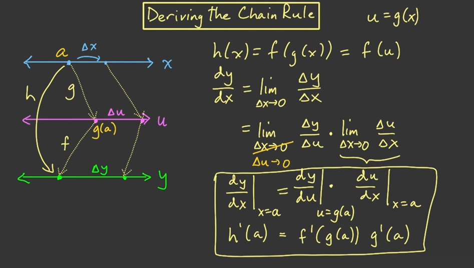
正式定义:等后面有时间了再认真的统计一下正向传播和反向传播两种情况下分别需要计算一些什么
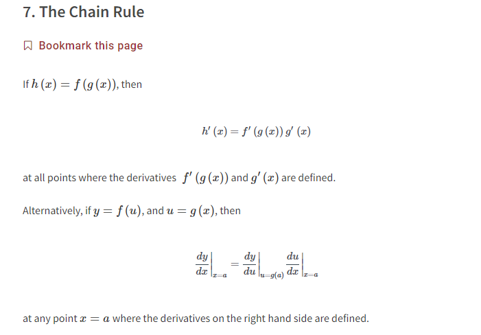
示例
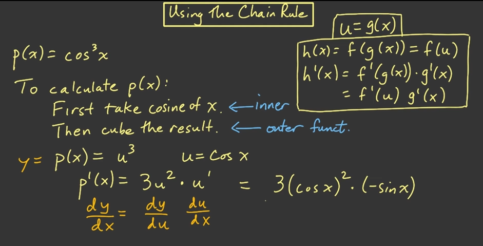
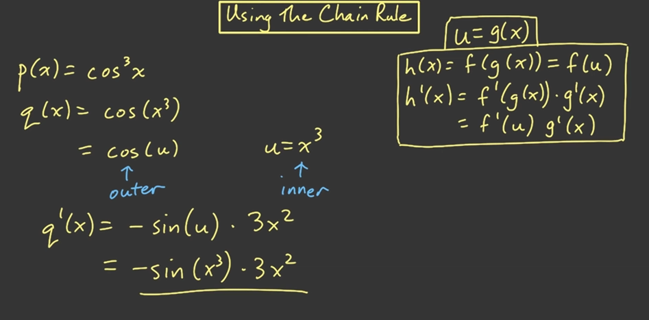
7.More Complicated Function更多复杂函数
首先我们考虑怎么计算f(x),最后发现是两个乘法乘在一起,所以我们求导也是按照一样的逻辑进行拆分.
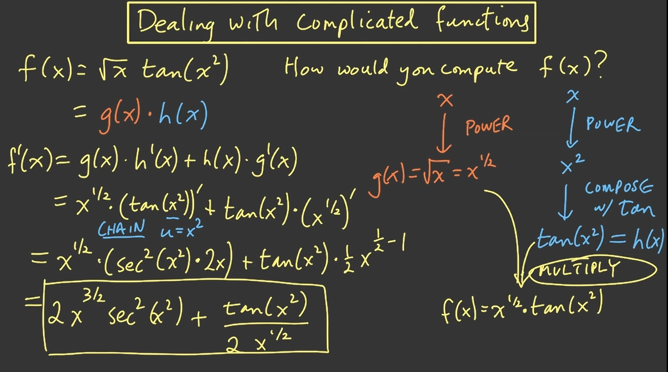
同样的首先考虑正向传播计算函数值,然后考虑如何拆分,按照执行的顺序步骤决定我们的导数计算逻辑
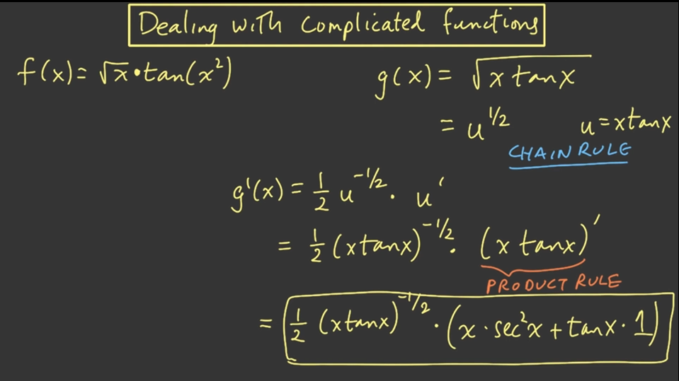
8.Quotient Rule vs Product and Chain Rule商法则乘积法则和链式求导法则
商法则或者链式法则都可以求这个函数的导数值
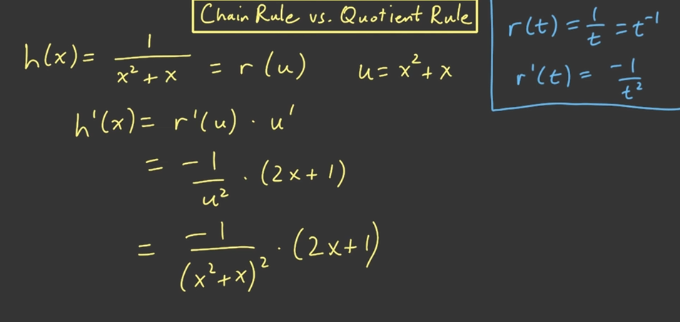
如果我们不记得商法则了,可以用链式求导法则求出来
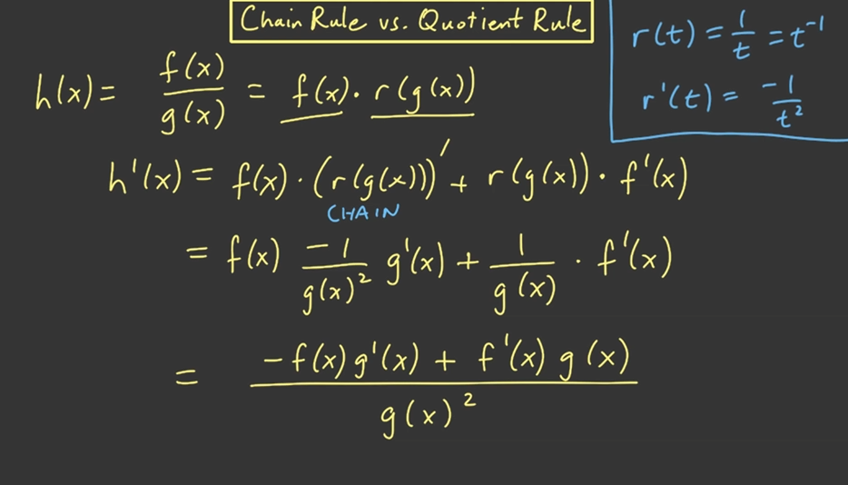
一层一层求解:外层需要用到内层正向传播计算出来的导数值.
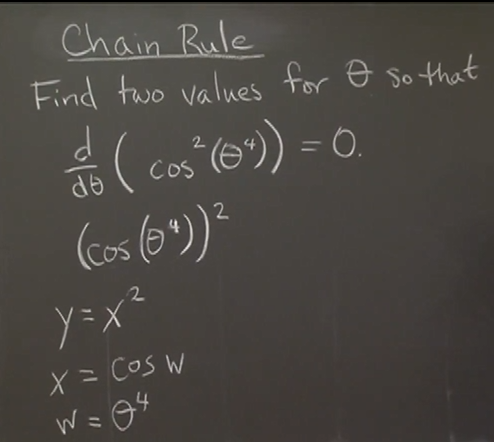
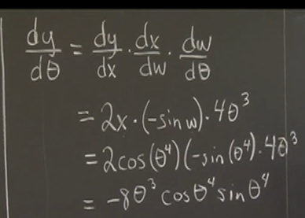
总结
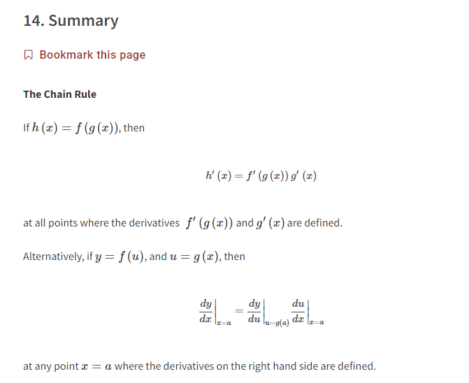